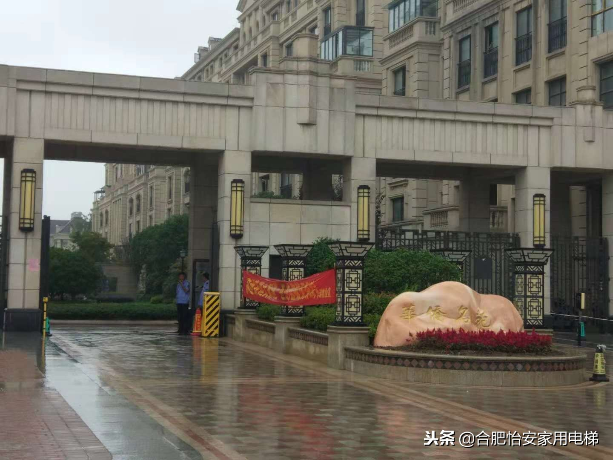
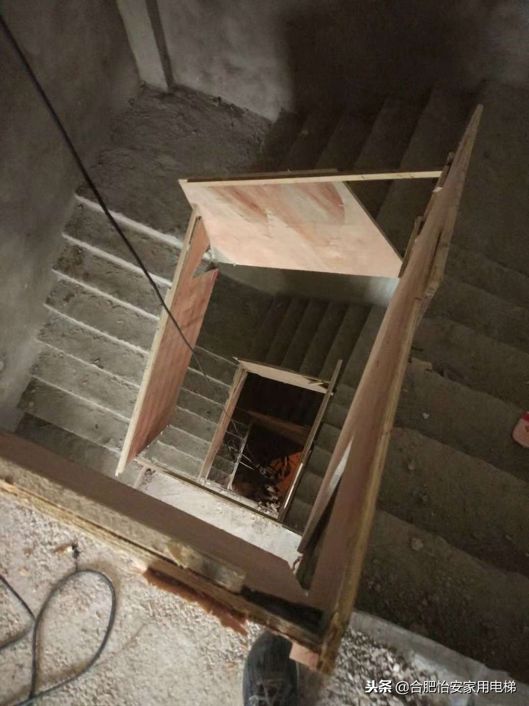
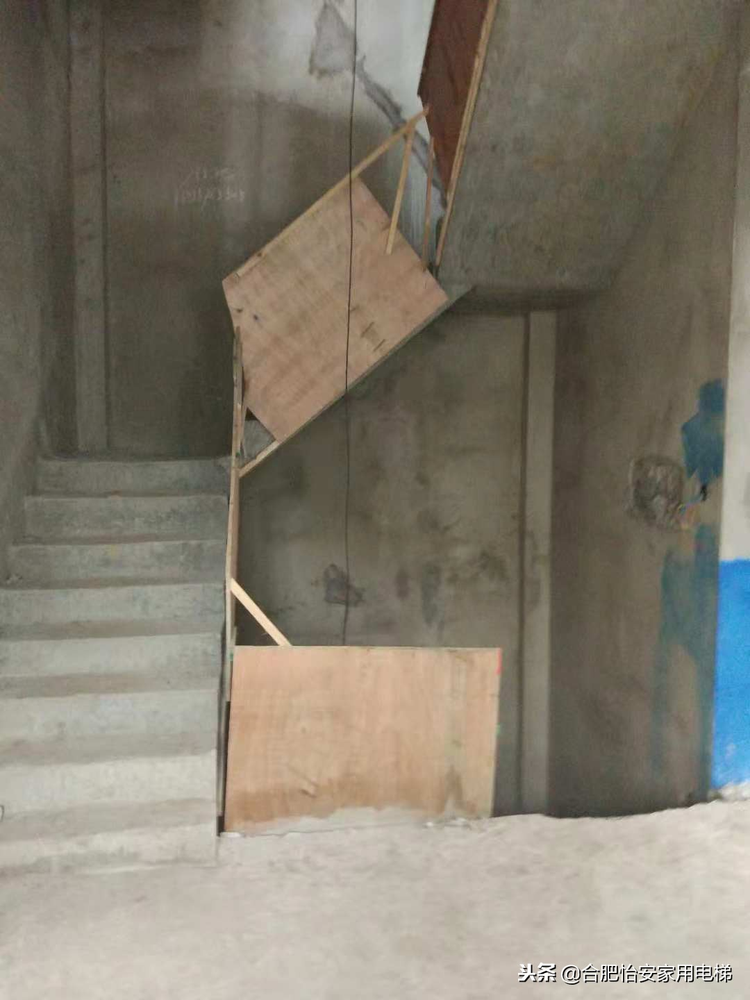
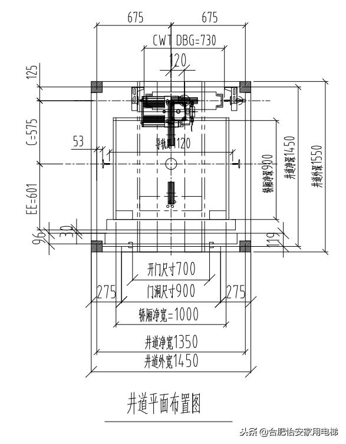
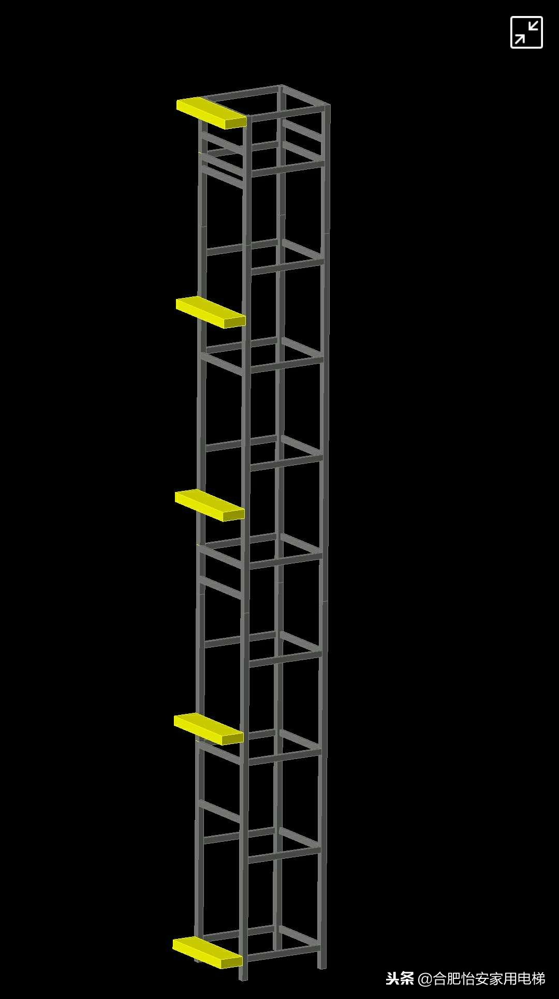
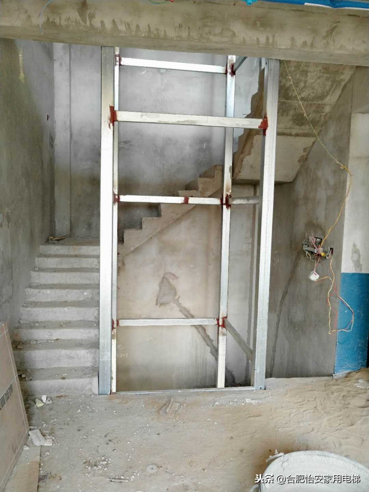
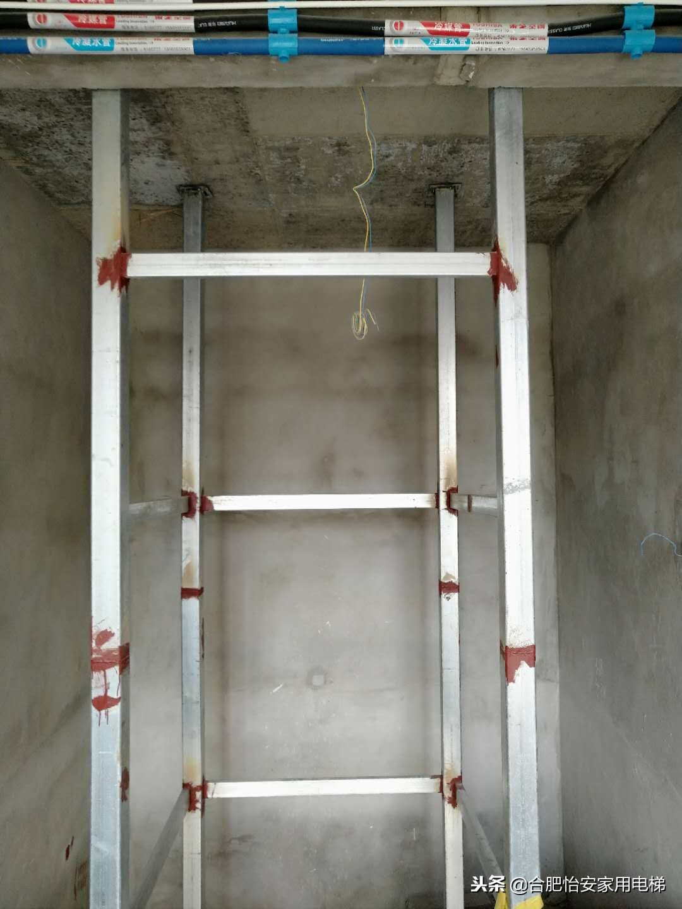
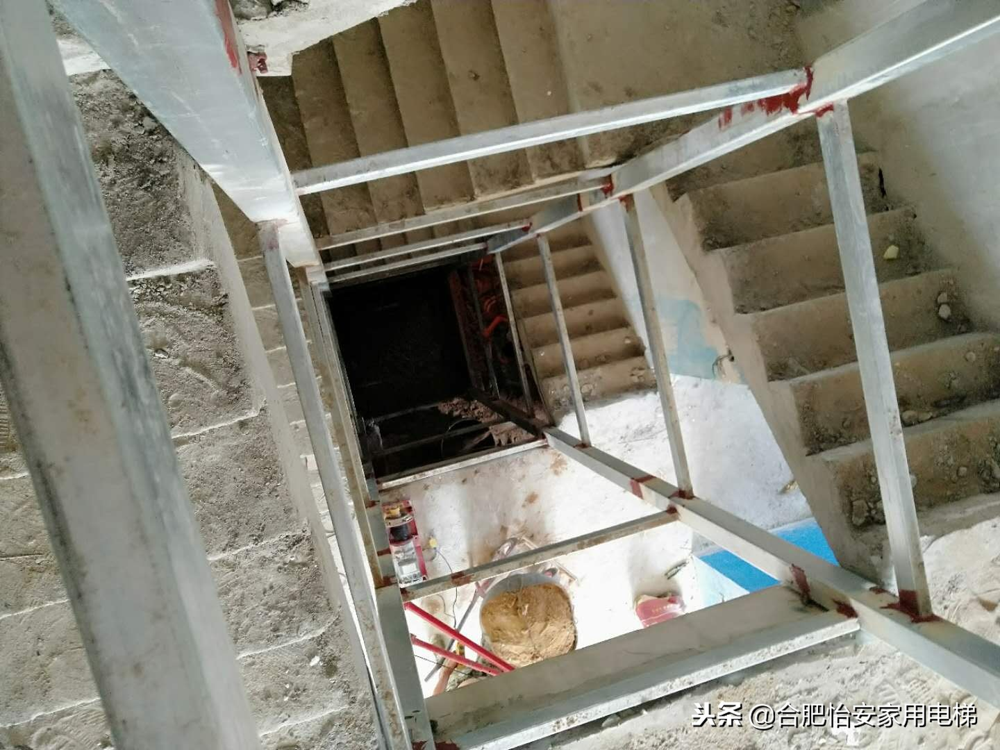
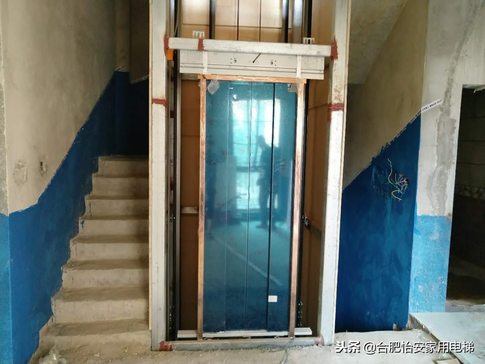
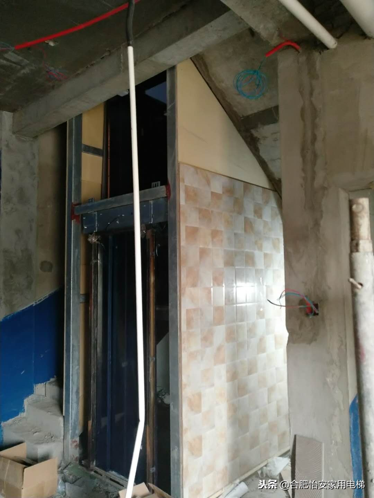

好的产品永远会被有缘分的人找到。
今天我们继续深度分析的是位于河南省的固始县华侨名苑别墅区。
一开始华侨名苑的客户是在网上找到小编的，从电话交流中给小编的感觉是这户的别墅肯定很小，也没地方做电梯，但是业主思想还是比较前卫的，在网上找到了小编。于是小编就给客户做个了初步的方案设计，客户觉得很满意。
客户也在当地找了很多的电梯公司来给他超小的别墅来设计家用别墅电梯方案，但是都没给设计出来，专业的事情需要交给专业的团队来做，小编就是专门做家用别墅电梯设计的及案例分享的。
经过和客户的多轮交流，客户带着考察团来到了美丽的安徽合肥市，参观了小编所做过 的家用别墅电梯案例，整个考察团都非常的满意，即使见面了，客户也没说出准确的尺寸，邀请我去美丽的固始到他的别墅去看下。由于双方聊的都非常愉快，小编次日就来到了固始县的华侨名苑别墅区，实地勘察客户家的室内情况给客户设计了方案。


我们来看下客户别墅的室内情况：


客户家的电梯井是个非常典型的U型楼梯，在楼梯中间预留了空间，整个楼梯踏步的宽度为0.9米，电梯井宽度为1.2米，这样的土建条件，无疑就是把楼梯做成0.8米，让电梯井宽度大些，因为客户不想做观光电梯想把成本做低些，只能用钢结构做井道了，钢结构做井道采用焊接还是比较牢固的，把材料买好点。

一切尺寸设计好后，小编免费给客户出了个钢结构焊接图纸：

小编是不是多才多艺，居然这么高大上的三维图都能画出来，哈哈，具体的二维图纸可以找我免费给需要的观众发送。
由于小编的专业性打动了客户，客户当天就要小编给他推荐家用电梯品牌，于是小编就推荐了行业了非常厉害的某安电梯。
经过10天的时间，客户家的电梯钢结构焊接完毕了。



焊接师傅整体的水平还是挺高的，和小编给的图纸基本吻合，太厉害了，给焊接师傅点赞！
小编给客户推荐的家用电梯经过30天的生产也开始经常安装了：


虽然现在的样子不是很完美，但是后期客户对电梯井道进行包装后，小编会去项目拍些美图回来，回馈一直关注我的粉丝。
附近的客户想去参观的，可以和小编预约，然后可以直接去参观考察。
本文著作权归怡安家用电梯合肥办事处所有，欢迎转发评论。